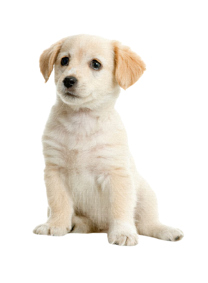

Personality: Friendly and outgoing, Labs play well with others
Energy Level: Very active; Labs are high-spirited and not afraid to show it
Energy Level: Very active; Labs are high-spirited and not afraid to show it
Good with Children: Yes
Good with Other Dogs: With supervision
Shedding: Regularly
Grooming: Weekly brushing
Trainability:Trainability: Eager to please
Height: 22.5-24.5 inches (male), 21.5-23.5 inches (female)
Weight: 65-80 pounds (male), 55-70 pounds (female)
Life Expectancy:Life Expectancy: 10-12 years
Barking Level: Medium>